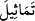

Beytü’l-makdis Süleyman (a.s.)’ın inşa ettiği şekilde hiç bozulmadan 453 sene devam
etti. Sonunda Buhtunnasr Kudüs’e saldırdı, şehri harâb etti, yaktı, yıktı, mescidi bozdu.
Mescidde bulunan altın, gümüş ve mücevheratın hepsini gasp ve yağma etti. Bunları
yüklenip kendi ülkesi olan Irak’a götürdü. Beytü’l-makdis yetmiş sene böyle harab
halde kaldı. Sonra Buhtunnasr, burun ve genizinden beynine giren bir sivrisinek
sebebiyle helak olup gitti. Çünkü o böyle beyninin büyüklüğü ve şişmesi dolayısıyla
nice tahrîbât katliâm ve zulümler yapmıştı. Allah Teâlâ da en zayıf bir hayvanı ona
musallat ederek helâk etti.
Ömrüm boyunca asla işitmedim
Kötü adamın iyilikle karşılaşacağını
“Heykellerden, havuzlar kadar (geniş) leğenlerden, sâbit kazanlardan ne dilerse
yaparlardı.”
“, “ (heykel)” kelimesinin çoğuludur. Heykel, başkasının misâli üzere olan
sûrettir. Yâni onların âdet edindikleri şekilde kıyamda, rükûda ve secdede duranların
sûretleri üzere meleklerin ve peygamberlerin sûretlerini yaparlardı. Çünkü o zaman
mescidlerde insanlar onlara baksınlar ve onlar gibi ibâdet etsinler diye camdan,
bakırdan, mermerden ve benzeri şeylerden bu heykeller yapılırdı.
Yine denilir ki bu heykeller bakırdan yapılmış erkek heykelleriydi. Süleyman (a.s.)
Rabbinden Allah yolunda savaşmaları için onlara ruh üfürülüp can verilmesini ve
onlara silahın etki etmemesini istemişti. İsfendiyar onlardandı. Nitekim Kurtubî
Tefsîri’nde böyle geçmektedir.
Rivâyete göre cinler Süleyman (a.s.)’ın kürsüsünün alt tarafına iki aslan, üst tarafına
da iki kartal heykeli yaptılar. Süleyman (a.s.) kürsüye çıkmak istediğinde aslanlar ön
ayaklarını uzatır, Süleyman (a.s.) da onların üzerinde yükselirdi. Kürsüye oturduğu
zaman da o iki kartal kanatları ile onu gölgelerdi. Süleyman (a.s.) vefat edince Efridun
kürsüye çıkmak için geldi. Fakat nasıl çıkacağını bilemedi. Kürsüye yaklaşınca aslan
onun ayağına bir pençe attı ve ayağını kırdı. Bundan sonra kimse kürsüye yaklaşmaya
cesaret edemedi.
Bilesin ki resim ve heykel yapmanın haram oluşu yeni bir şer’î hükümdür. Bu
ümmetten önce sûret ve heykeller edinmek mübah idi. Bu ümmete haram kılınması,
Peygamberimiz (s.a.)’in kavminin heykellere, yâni putlara tapıyor olmaları
sebebiyledir.
Onun için sûret ve heykel yapmakla meşgul olmak yasaklanmıştır. Havâssa,
varlıkların en sevimsizi kendisiyle Allah’a isyan edilen şeydir. Bir hadîste şöyle
buyrulmuştur: “Kim bir sûret/heykel yaparsa, o kişi yapmış olduğu bu sûret ve heykele
can ve ruh üfleyinceye kadar Allah ona azab eder. O kişi ise ebedî olarak o şeye ruh
üfleyemez.”[15] Bu hadis canlı varlıkların heykellerinin yapılmasının haram olduğuna
delâlet eder.